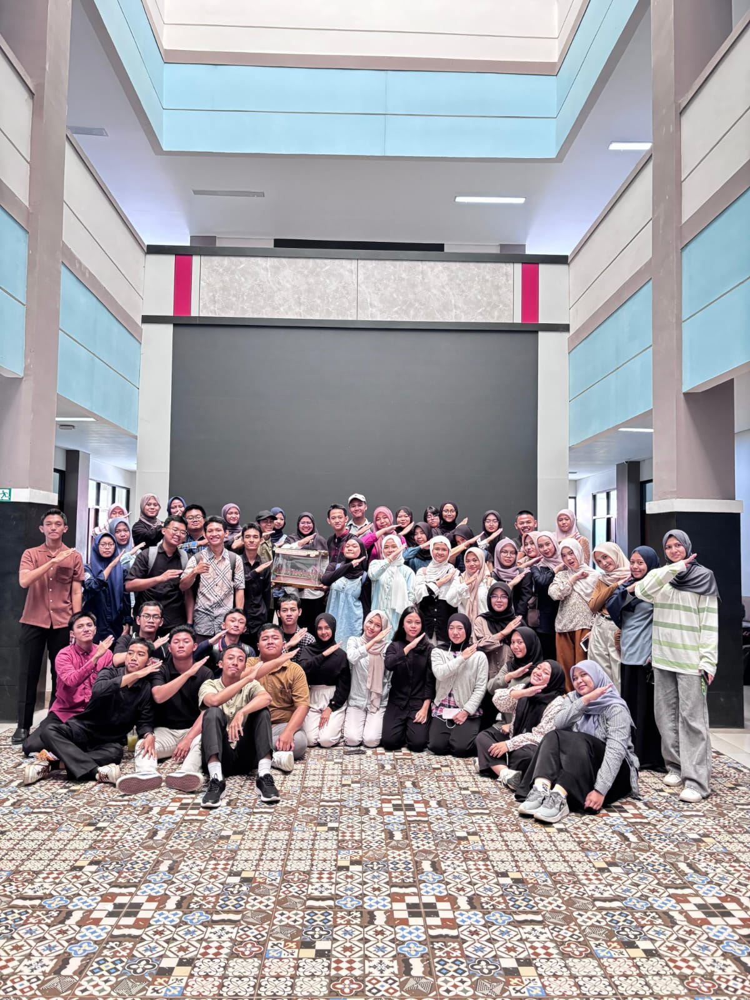
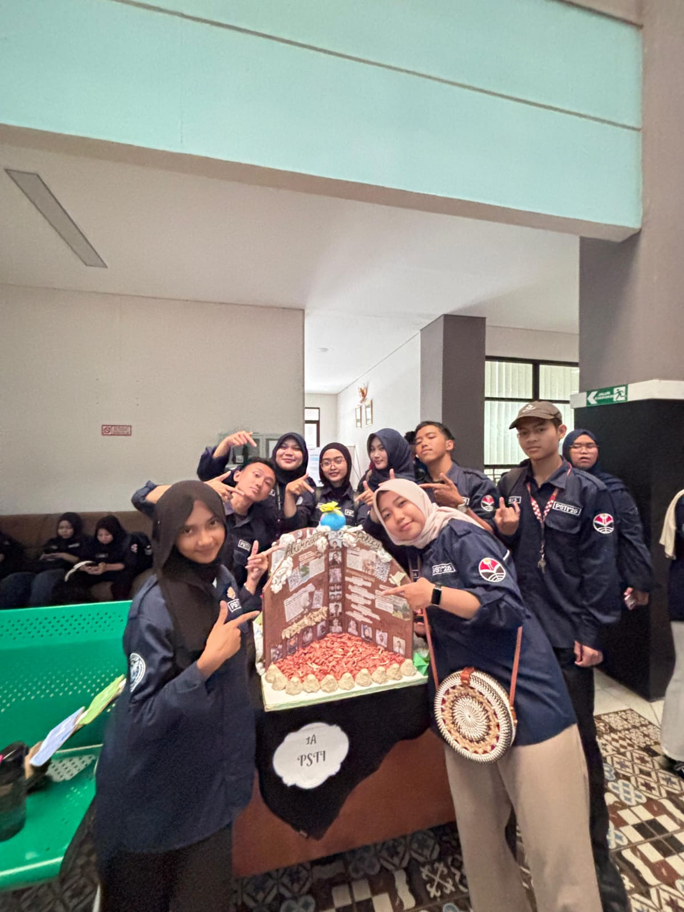
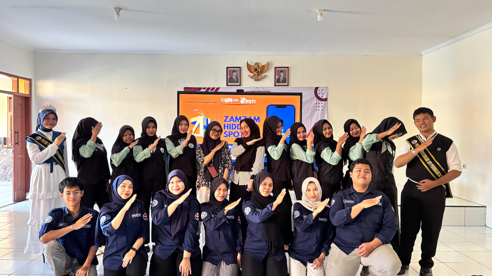
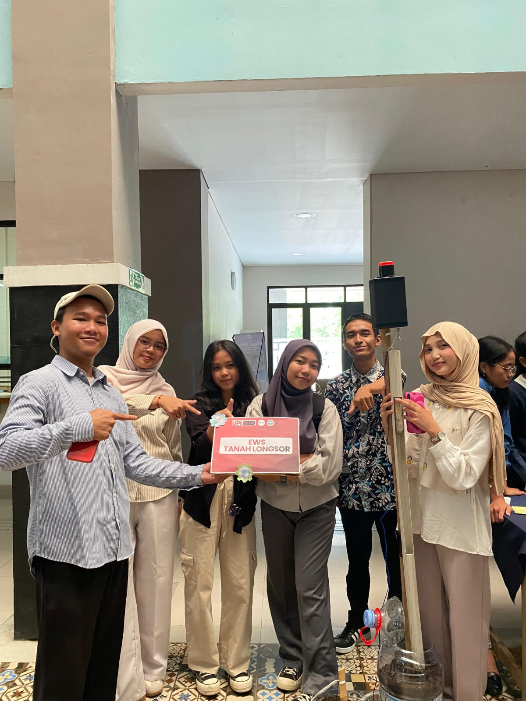

My Projects
Berikut adalah beberapa project sederhana yang pernah atau sedang saya kerjakan.
Miniatur Taman dengan Sistem Lampu Otomatis Berbasis LDR

Prototipe miniatur taman yang dilengkapi sistem lampu otomatis menggunakan sensor LDR untuk mendeteksi intensitas cahaya dan mengatur lampu secara otomatis.
Lihat di YouTubeShowcase Pendidikan Pancasila

Showcase yang menyajikan pemahaman dan penerapan nilai-nilai Pancasila melalui konten edukatif dan kreatif yang dekat dengan kehidupan sehari-hari.
Buku "Pendidikan dan Teknologi"

Buku yang membahas hubungan antara pendidikan dan perkembangan teknologi serta pemanfaatannya untuk mendukung proses pembelajaran di era digital.
Lihat di GramediaGame "Kreswara Studio"

Proyek pengembangan game yang menggabungkan kreativitas, teknologi, dan unsur interaktif untuk menghasilkan pengalaman bermain yang menarik dan edukatif.
Lihat di Google DriveUI/UX "Zamzam Hidden Spot"

Project yang dirancang untuk membantu pengguna menemukan dan mengenal berbagai destinasi atau tempat menarik yang belum banyak diketahui.
Lihat di InstagramEarly Warning System pada Tanah Longsor

Alat sederhana yang dirancang sebagai sistem peringatan dini untuk mendeteksi potensi pergerakan tanah dan memberikan peringatan guna meningkatkan kesiapsiagaan terhadap bencana longsor.